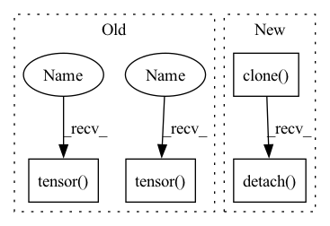

Pattern ID :11025

Before Change
:param use_unsigned_symmetric: Whether to use signed/unsigned in symmetric case
:return: Tuple of delta and offset and num_steps
num_steps = torch.pow(torch.tensor([2], device=encoding_min.device), bitwidth) - 1
if use_symmetric_encodings and use_strict_symmetric:
num_steps -= 1
// NOTE: This assumes that the use_* flags reflect true condition (regardless of the encoding_* values)
if use_symmetric_encodings and (not use_unsigned_symmetric):
// signed symmetric
absmax = torch.max(torch.abs(encoding_min), torch.abs(encoding_max))
half_num_steps = torch.div(num_steps, 2)
delta = absmax / torch.floor(half_num_steps)
offset = -torch.ceil(half_num_steps)
else:
delta = (encoding_max - encoding_min) / num_steps
if use_symmetric_encodings:
// unsigned symmetric
offset = encoding_min / delta
else:
// asymmetric
b_zero = torch.round(-encoding_min / delta)
b_zero = torch.min(num_steps, torch.max(torch.tensor([0], device=encoding_min.device), b_zero))
offset = torch.tensor(-b_zero, device=encoding_min.device)
return delta, offset, num_steps
After Change
zero_tensor = constant_tensor_factory(0., device)
b_zero = torch.round(-encoding_min / delta)
b_zero = torch.min(num_steps_tensor, torch.max(zero_tensor, b_zero))
offset = -b_zero.clone().detach()
return delta, offset, num_steps_tensor
In pattern: SUPERPATTERN
Frequency: 3
Non-data size: 4
Instances
Fragment ID: 37938434
Project Name: quic/aimet
Commit Name: d26dbba1690dee6af39dcf88fbea5308ec1b65ce
Time: 2022-11-23
Author: quic_geunlee@quicinc.com
File Name: TrainingExtensions/torch/src/python/aimet_torch/quantsim_straight_through_grad.py
M Class Name: AnonimousClass
N Class Name: AnonimousClass
M Method Name: get_computed_encodings(6)
N Method Name: get_computed_encodings(6)
M Parent Class:
N Parent Class:
M File Name: TrainingExtensions/torch/src/python/aimet_torch/quantsim_straight_through_grad.py
N File Name: TrainingExtensions/torch/src/python/aimet_torch/quantsim_straight_through_grad.py
M Start Line: 336
M End Line: 359
N Start Line: 315
N End Line: 340
'>
Before Change
obj_energy = x[:, :, 4:5, :, :]
class_energy = x[:, :, 5:, :, :]
bbox_xywh = torch.tensor(xywh_energy, device=self.device)
// Cell offsets C_x and C_y.
cx = torch.linspace(0, w - 1, w, device=self.device).repeat(h, 1)
cy = torch.linspace(
0, h - 1, h, device=self.device
).repeat(w, 1).t().contiguous()
// Get bbox center x and y coordinates.
bbox_xywh[:, :, 0, :, :].sigmoid_().add_(cx).div_(w)
bbox_xywh[:, :, 1, :, :].sigmoid_().add_(cy).div_(h)
// Anchor priors P_w and P_h.
anchors = self.anchors
anchor_w = torch.tensor(
anchors, device=self.device
)[:, 0].reshape(1, num_anchors, 1, 1)
anchor_h = torch.tensor(
anchors, device=self.device
)[:, 1].reshape(1, num_anchors, 1, 1)
// Get bbox width and height.
bbox_xywh[:, :, 2, :, :].exp_().mul_(anchor_w)
bbox_xywh[:, :, 3, :, :].exp_().mul_(anchor_h)
// Get objectness and class scores.
obj_score = torch.tensor(obj_energy, device=self.device).sigmoid()
class_score = F.softmax(
torch.tensor(class_energy, device=self.device), dim=2
)
max_class_score, max_class_idx = torch.max(class_score, 2, keepdim=True)
After Change
bbox_xywh[:, :, 3, :, :].exp_().mul_(anchor_h)
// Get objectness and class scores.
obj_score = obj_energy.clone().detach().sigmoid()
class_score = F.softmax(class_energy.clone().detach(), dim=2)
max_class_score, max_class_idx = torch.max(class_score, 2, keepdim=True)
'>
Fragment ID: 37938432
Project Name: nrsyed/pytorch-yolov3
Commit Name: e8e0039e215b0e6e77cccf37604ff0004a011793
Time: 2020-04-01
Author: najam.r.syed@gmail.com
File Name: darknet.py
M Class Name: YOLOLayer
N Class Name: YOLOLayer
M Method Name: forward(2)
N Method Name: forward(2)
M Parent Class: torch.nn.Module
N Parent Class: torch.nn.Module
M File Name: darknet.py
N File Name: darknet.py
M Start Line: 46
M End Line: 79
N Start Line: 46
N End Line: 77
'>
Before Change
// Update the values
bn.eps = 0
bn.track_running_stats = False
bn.weight.copy_(torch.tensor(weight, device=bn.weight.device, dtype=bn.weight.dtype).reshape_as(bn.weight))
bn.bias.copy_(torch.tensor(bias, device=bn.bias.device, dtype=bn.bias.dtype).reshape_as(bn.bias))
bn.running_mean.copy_(torch.zeros(bn.running_mean.shape, device=bn.running_mean.device, dtype=bn.running_mean.dtype).reshape_as(bn.running_mean))
bn.running_var.copy_(torch.ones(bn.running_var.shape, device=bn.running_var.device, dtype=bn.running_var.dtype).reshape_as(bn.running_var))
After Change
bn.eps = 0
bn.track_running_stats = False
bn.weight.copy_(weight.clone().detach())
bn.bias.copy_(bias.clone().detach())
bn.running_mean = torch.zeros(bn.running_mean.shape, device=bn.running_mean.device, dtype=bn.running_mean.dtype)
bn.running_var = torch.ones(bn.running_var.shape, device=bn.running_var.device, dtype=bn.running_var.dtype)
'>
Fragment ID: 37938406
Project Name: quic/aimet
Commit Name: c1bbcbc5d3e0bc1d1f4daec202f4713c36a91f50
Time: 2023-04-18
Author: quic_ristha@quicinc.com
File Name: TrainingExtensions/torch/src/python/aimet_torch/batch_norm_fold.py
M Class Name: AnonimousClass
N Class Name: AnonimousClass
M Method Name: convert_batchnorm_parameters(2)
N Method Name: convert_batchnorm_parameters(2)
M Parent Class:
N Parent Class:
M File Name: TrainingExtensions/torch/src/python/aimet_torch/batch_norm_fold.py
N File Name: TrainingExtensions/torch/src/python/aimet_torch/batch_norm_fold.py
M Start Line: 539
M End Line: 548
N Start Line: 539
N End Line: 548
'>
Before Change
:param use_unsigned_symmetric: Whether to use signed/unsigned in symmetric case
:return: Tuple of delta and offset and num_steps
num_steps = torch.pow(torch.tensor([2], device=encoding_min.device), bitwidth) - 1
if use_symmetric_encodings and use_strict_symmetric:
num_steps -= 1
// NOTE: This assumes that the use_* flags reflect true condition (regardless of the encoding_* values)
if use_symmetric_encodings and (not use_unsigned_symmetric):
// signed symmetric
absmax = torch.max(torch.abs(encoding_min), torch.abs(encoding_max))
half_num_steps = torch.div(num_steps, 2)
delta = absmax / torch.floor(half_num_steps)
offset = -torch.ceil(half_num_steps)
else:
delta = (encoding_max - encoding_min) / num_steps
if use_symmetric_encodings:
// unsigned symmetric
offset = encoding_min / delta
else:
// asymmetric
b_zero = torch.round(-encoding_min / delta)
b_zero = torch.min(num_steps, torch.max(torch.tensor([0], device=encoding_min.device), b_zero))
offset = torch.tensor(-b_zero, device=encoding_min.device)
return delta, offset, num_steps
After Change
zero_tensor = constant_tensor_factory(0., device)
b_zero = torch.round(-encoding_min / delta)
b_zero = torch.min(num_steps_tensor, torch.max(zero_tensor, b_zero))
offset = -b_zero.clone().detach()
return delta, offset, num_steps_tensor
'>
Fragment ID: 37938421
Project Name: quic/aimet
Commit Name: d26dbba1690dee6af39dcf88fbea5308ec1b65ce
Time: 2022-11-23
Author: quic_geunlee@quicinc.com
File Name: TrainingExtensions/torch/src/python/aimet_torch/quantsim_straight_through_grad.py
M Class Name: AnonimousClass
N Class Name: AnonimousClass
M Method Name: get_computed_encodings(6)
N Method Name: get_computed_encodings(6)
M Parent Class:
N Parent Class:
M File Name: TrainingExtensions/torch/src/python/aimet_torch/quantsim_straight_through_grad.py
N File Name: TrainingExtensions/torch/src/python/aimet_torch/quantsim_straight_through_grad.py
M Start Line: 336
M End Line: 359
N Start Line: 315
N End Line: 340